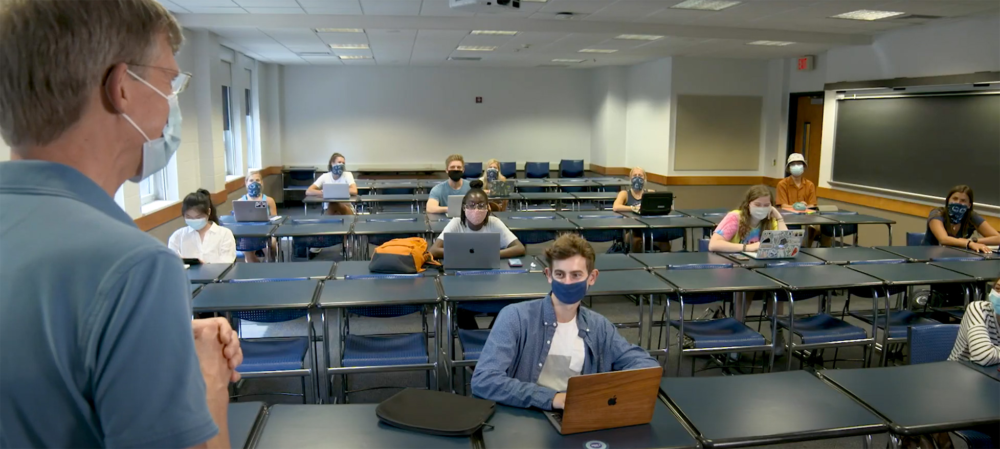

B. Tech in Computer Science (Artificial Learning and Machine Learning) prepares students with advanced learning and knowledge in machine learning, often known as deep learning and artificial intelligence.
The programme empowers and enables students to build software to be intelligent machines, s and/or applications with a cutting-edge blend of machine learning, data analytics and other advanced technologies. The major objective being to program machines with artificial intelligence (AI) and machine learning algorithms to create real time user experience in solving given problems.
This programme covers AI conceptual frameworks, tools and methods in different areas such as neural networks, signal processing and data mining aiming at creating an unified solution of machine learning problems and solutions.
This programme empowers students with skills and abilities to design intelligent solutions to problems in a variety of domains and business applications and fields such as natural language processing, text mining, robotics, reasoning and problem-solving.
This programme facilitates lifelong learning, exceptional and remunerative career paths with challenging roles in a futuristic industry.
The department has qualified faculty members with strong expertise in the research areas of Data Science, Artificial intelligence, Natural Language Processing, Cyber Security systems, software engineering, data base systems and data warehousing systems, information systems and computer networking. Industry-institute interaction is a regular phenomenon of Computer Science & Engineering departments.
Faculty
| S.no |
Name |
Qualification |
Department |
Jntuh-ID |
Photograph |
| 1. |
Mr.Irfan pasha |
M.tech |
CSE-AIML |
20755p |
|
| 2. |
Mr.yaseen pasha |
Ph.D |
CSE-AIML |
20756p |
|
| 3. |
Mrs.Hyma |
M.tech |
CSE-AIML |
20785p |
|
| 4. |
Mrs.Meghana |
M.tech |
CSE-AIML |
207985p |
|
| 5. |
Mrs.Sukerthi |
M.tech |
CSE-AIML |
20595p |
|